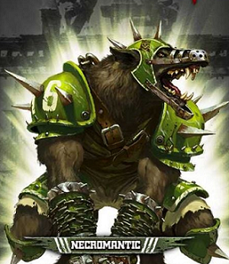
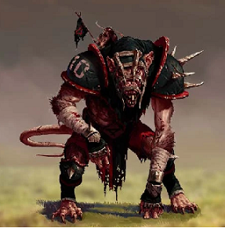
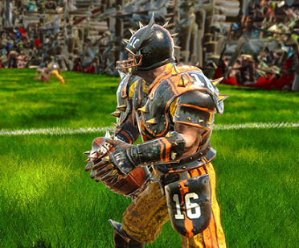

BOWL and BEERS
Home
Reglamento
REGLAS CASERAS Liga 2023 BOWL and BEERS
Los Equipos pintados con al menos 4 colores obtendran un +1 en el factor de hinchas (gratis) para toda la liga,esto hara qye sus seguidores apoyen a sus colores con mas fuerza
En la jornada 5 los patrocinadores de la liga sortearan 2 barriles de cerveza BloodWeiser (1 Barril por jugador) a coste gratis
Clima, Modificadores a las tiradas:
Jornada
Efecto
1-2
+2
3
+1
4-8
0
9
-1
10-11
-2
Los Partidos se puntuan:
Resultado
Valor
Victoria
3
Empate
1
Derrota
0
Equipos
Liga 2023
Filius Nox (Nigromantes)
Entrenador: Albert C.
Los Autistas de Hamelin (Skavens)
Entrenador: Arnau C.
Kunyadoz (Orcos Negros)
Entrenador: David(Hachas)
Sol Sangrante (Orcos)
Entrenador: David M.
Putos Roedores (Skavens)
Entrenador: David V.
Escarabajos Enojados (Reyes Funerarios)
Entrenador: Gines P.
Los Profetas (Orcos Negros)
Entrenador: Jaime
Titanes de Villaguijarro (Orcos)
Entrenador: Javier M.
La Liga Jurasica (Hombres Lagarto)
Entrenador: Jordi C.
Notthingan Felfas (Elfos)
Entrenador: Josep Maria
Los Satiros Concupiscentes (Hombres Bestia)
Entrenador: Oscar L.
Resultados
Jornada 1 02/02/ al 11/02/
Kunyadoz VS Sol Sangrante - RESULTADO: 0-0
Notthingan Felfas VS Los Autistas de Hamelin - RESULTADO: 1-0
Filius Nox VS La Liga Jurasica - RESULTADO: 2-0
Titanes de Villaguijarro VS Escarabajos Enojados - RESULTADO: 0-2
Los Satiros Concupiscentes VS Putos Roedores - RESULTADO: 1-1
Gigantes Verdes VS Los Profetas - RESULTADO: 0-1
Jornada 2 12/02/ al 25/02/
Los Autistas de Hamelin VS Los Satiros Concupiscentes - RESULTADO: 1-1
Sol Sangrante VS Filius Nox - RESULTADO: 0-1
Notthingan Felfas VS Kunyadoz - RESULTADO: 1-2
Los Profetas VS Titanes de Villaguijarro - RESULTADO: 2-0
La Liga Jurasica VS Gigantes Verdes - RESULTADO: 1-1
Putos Roedores VS Escarabajos Enojados - RESULTADO: 0-2
Jornada 3 26/02/ al 10/03/
Gigantes Verdes VS Sol Sangrante - RESULTADO: 2-0
Filius Nox VS Notthingan Felfas - RESULTADO: 1-0
Los Profetas VS La Liga Jurasica - RESULTADO: 2-0
Escarabajos Enojados VS Los Autistas de Hamelin - RESULTADO: 1-0
Kunyadoz VS Los Satiros Concupiscentes - RESULTADO: 2-1
Titanes de Villaguijarro VS Putos Roedores - RESULTADO: 0-1

Jornada 4 11/03/ al 24/03/
La Liga Jurasica VS Titanes de Villaguijarro - RESULTADO: 1-0
Notthingan Felfas VS Gigantes Verdes - RESULTADO: 0-2
Los Satiros Concupiscentes VS Filius Nox - RESULTADO: 0-1
Sol Sangrante VS Los Profetas - RESULTADO: 0-1
Los Autistas de Hamelin VS Putos Roedores - RESULTADO: 1-2
Escarabajos Enojados VS Kunyadoz - RESULTADO: 1-1
Jornada 5 25/03/ al 14/04/
Los Profetas VS Notthingan Felfas - RESULTADO: 1-0
Kunyadoz VS Putos Roedores RESULTADO: 1-0
La Liga Jurasica VS Sol Sangrante RESULTADO: 1-2
Titanes de Villaguijarro VS Los Autistas de Hamelin - RESULTADO: 0-1
Gigantes Verdes VS Los Satiros Concupiscentes - RESULTADO: 2-1
Filius Nox VS Escarabajos Enojados RESULTADO: 1-1
Jornada 6 15/04/ al 28/04/
Putos Roedores VS Filius Nox - RESULTADO: 0-3
Los Satiros Concupiscentes VS Los Profetas - RESULTADO: 1-1
Los Autistas de Hamelin VS Kunyadoz - RESULTADO: 0-2
Notthingan Felfas VS La Liga Jurasica - RESULTADO: 2-2
Sol Sangrante VS Titanes de Villaguijarro RESULTADO: 1-0
Escarabajos Enojados VS Gigantes Verdes RESULTADO: 0-1
Jornada 7 29/04/ al 12/05/
Gigantes Verdes VS Putos Roedores 0-0
Sol Sangrante VS Notthingan Felfas
La Liga Jurasica VS Los Satiros Concupiscentes RESULTADO: 0-2
Kunyadoz VS Titanes de Villaguijarro
Los Profetas VS Escarabajos Enojados RESULTADO: 1-1
Filius Nox VS Los Autistas de Hamelin RESULTADO: 2-1

Jornada 8 13/05/ al 26/05/
Los Satiros Concupiscentes VS Sol Sangrante
Los Autistas de Hamelin VS Gigantes Verdes
Putos Roedores VS Los Profetas
Escarabajos Enojados VS La Liga Jurasica
Titanes de Villaguijarro VS Notthingan Felfas
Kunyadoz VS Filius Nox
Jornada 9 27/05/ al 09/06/
Filius Nox VS Titanes de Villaguijarro
Gigantes Verdes VS Kunyadoz
La Liga Jurasica VS Putos Roedores
Sol Sangrante VS Escarabajos Enojados
Notthingan Felfas VS Los Satiros Concupiscentes
Los Profetas VS Los Autistas de Hamelin
Jornada 10 10/06/ al 23/06/
Kunyadoz VS Los Profetas
Titanes de Villaguijarro VS Los Satiros Concupiscentes
Putos Roedores VS Sol Sangrante
Filius Nox VS Gigantes Verdes
Escarabajos Enojados VS otthingan Felfas
Los Autistas de Hamelin VS La Liga Jurasica

Jornada 11 24/06/ al 07/07/
Notthingan Felfas VS Putos Roedores
Los Profetas VS Filius Nox
La Liga Jurasica VS Kunyadoz
Sol Sangrante VS Los Autistas de Hamelin
Gigantes Verdes VS Titanes de Villaguijarro
Los Satiros Concupiscentes VS Escarabajos Enojados
<- ANTERIOR
SIGUIENTE ->
Clasificacion
Liga 2023 Invierno-Primavera Bowl and Beers
Equipo
PT
PJ
PG
PP
PE
TF
TC
Filius Nox
19
7
6
0
1
11
2
Los Profetas
17
7
5
0
2
9
2
Kunyadoz
14
6
4
0
2
8
3
Gigantes Verdes
13
7
4
2
1
8
3
Escarabajos Enojados
12
7
3
2
2
8
4
Putos Roedores
7
7
2
2
2
4
8
Sol Sangrante
7
6
2
3
1
3
5
Los Satiros Concupiscentes
6
7
1
3
3
8
8
Liga Jurasica
5
7
1
3
2
5
11
Los Autistas de Hamelin
4
7
1
3
2
4
9
Notthingan Felfas
4
6
1
4
1
4
8
Titanes de Villaguijarro
0
6
0
4
0
0
8
Noticias
FIn Segunda Jornada
En un reino lejano, conocido como el Reino de las Mil Batallas, la emoción llenaba el aire cuando se anunciaba la llegada del Rey de los Unos. Este enigmático personaje, temido y reverenciado por igual, traía consigo un aura de misterio y poder. Se decía que aquellos que lo desafiaban en el juego de los unos nunca volvían a ser los mismos.
En las tierras olvidadas, donde la oscuridad se cierne como un manto eterno, las momias, envueltas en sus vendas milenarias, abandonaban sus tumbas para caminar una vez más bajo la luna pálida. Con manos cuidadosas, desgarraban trozos de su sudario para secar los ojos llorosos de los orcos, criaturas tan brutales como desamparadas en su aflicción.
Mientras las momias cumplían su macabro deber, en los rincones más sombríos del bosque, los elfos negros, victimas de la violencia desenfrenada de los orcos, sufrían en silencio. Sus gemidos resonaban entre los árboles retorcidos, testigos mudos de sus terribles desventuras.
En tanto, los skavens, criaturas rastreras y astutas, saltaban ágiles entre las sombras, recolectando las lágrimas de los hombres bestias que, con sus alaridos desgarradores, alimentaban el suelo maldito.
Mientras tanto, en las tierras de los Reyes Funerarios, gobernantes de un reino de muerte y desolación, se llevaban a cabo sacrificios rituales. Las ranas, consideradas criaturas sagradas por su conexión con el más allá, eran ofrendadas en altares de piedra para mantener la posición de los reyes en la jerarquía de los no-muertos.
Sin embargo, en medio de estas expectativas, un evento aún más inusual estaba por ocurrir. En el campo de batalla, donde las criaturas más feroces luchaban por la supremacía, se había organizado un duelo entre orcos. Estas temibles criaturas se habían retado entre sí en una lucha a muerte, y la multitud se congregaba ansiosa para presenciar el enfrentamiento. Con un estruendo ensordecedor, los orcos chocaron entre sí, llenando el campo de batalla con el sonido de sus gritos y el choque de sus armas. La tierra temblaba bajo sus pies mientras se dedicaban a empujarse, cada uno luchando por demostrar su dominio sobre el otro.